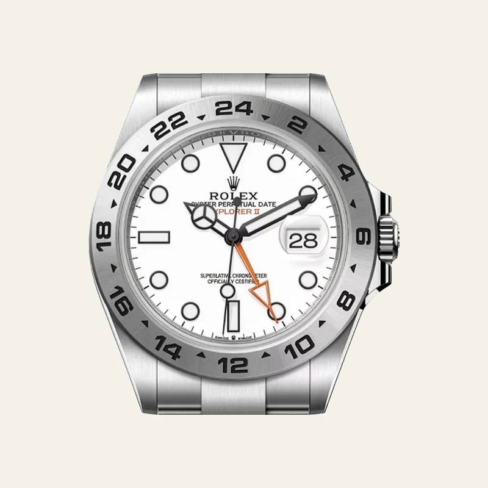

Passenger manifest
About
Bases
02
Entries
10
Interests
03
Status
Placeholder
Concept — branch concept/about-map
A route-map alternative to the flag row and experience manifest. The committed
About page is untouched on main. The place content below is real;
the cover fields, the hobby placeholders and the watch stamps are carried over
unchanged from the committed page and are still scaffolding.
Places
Route chart — home bases
Quad Cities, Iowa
-
Pleasant Valley High School
-
Basketball
-
Jazz band
-
Cross country
-
Installed pallet racking at one of the largest distribution warehouses in the country
Tulsa, Oklahoma
-
Studied finance
-
Co-founded Sky Ventures, Oklahoma’s first student-run accelerator, five universities, six companies through the cohort, $50,000 deployed
-
ORU Finance Society, brought in professionals across PE, IB, and personal financial planning so students saw the whole field, not one corner of it
-
Regent Bank, risk-rated fintech and cannabis-adjacent accounts inside a heavily regulated shop, ran onboarding through investment and committee review
-
Co-founded and ran M&G Journal, a student-run finance publication covering capital markets, startups, and careers, grew to 200+ subscribers with five sourced articles a week
Hobbies
03 — Off duty
-
Watches
 Stamp
Stamp
Unverified
- Origin
- Switzerland — Vallée de Joux
- Founded
- 1833
- Maison founded. The Reverso itself dates to 1931.
- Made for
- Polo. The case pivots in its carrier so the crystal can be turned face-down against a mallet strike.

StampUnverified
- Origin
- Switzerland — Geneva
- Founded
- 1905
- Founded in London; Geneva from 1919.
- Made for
- Caving. A fixed 24-hour bezel and a second hour hand to tell day from night underground.
 Stamp
Stamp
Unverified
- Origin
- Germany — Glashütte, Saxony
- Founded
- 1845
- Watchmaking in the town. The brand name is far younger.
- Made for
- Precision timing. A chronograph built to measure elapsed intervals, not to be worn underwater.
Three Cravings: JLC Reverso, Rolex Polar Explorer II, Glashütte Original.
-
Photography

Passenger Ticket and Baggage Check
SZGSalzburg, Austria
026 4447 85332
Page
Shot from the fortress. Domes, the river, and the whole city under low grey.

Passenger Ticket and Baggage Check
VIEAustria
026 5108 21744
Page
Empty street at dusk. Wet cobbles, bronze statues mid-throw on both sides.

Passenger Ticket and Baggage Check
PSACinque Terre, Italy
026 7731 40915
Page
Monterosso in September. Umbrellas all the way down to the water.

Passenger Ticket and Baggage Check
ZRHLucerne, Switzerland
026 2294 66180
Page
Up the Rigi. Alps on every side and a meadow full of buttercups.

Passenger Ticket and Baggage Check
HERHeraklion, Crete
026 8815 03627
Page
A white chapel above the sea. Blue dome, one bell, nobody else up there.

Passenger Ticket and Baggage Check
CHQChania, Crete
026 3360 97251
Page
Warm stone, low sun, the sea just past the wall.
Warm stone, low sun, the sea just past the wall.
A white chapel above the sea, blue dome, bell, nobody else there.
Catching vibes, trying to catch the photo.
Sports
One quiet line.